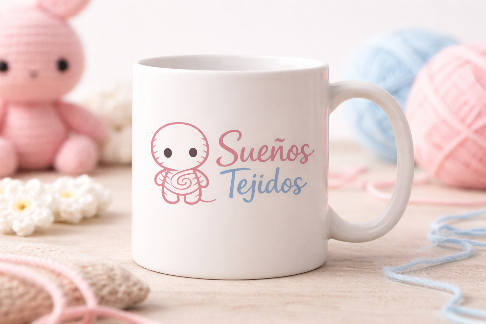
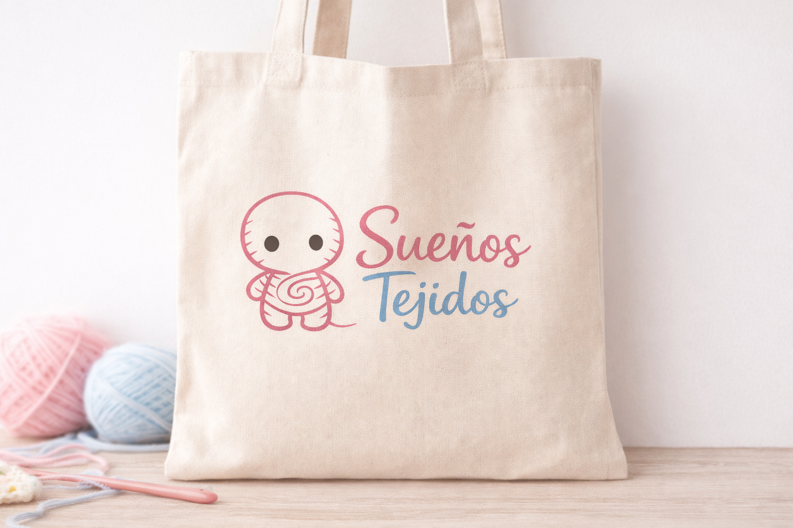
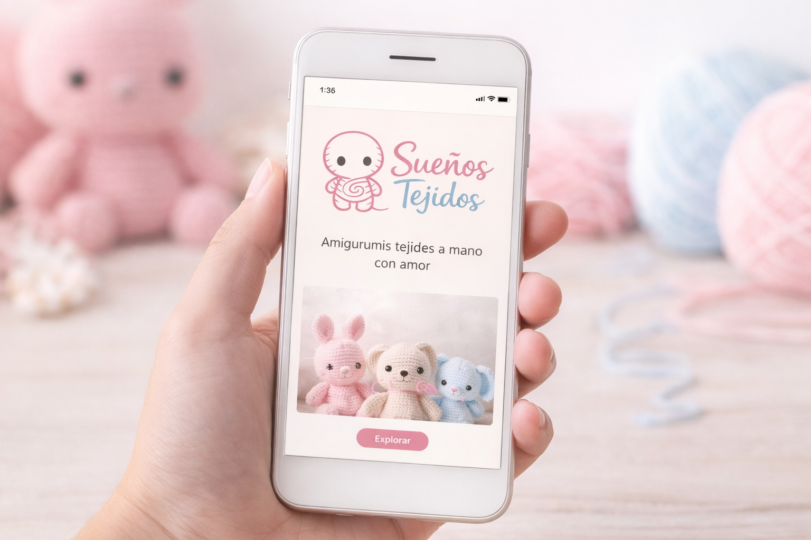

Ejemplos de cómo la identidad de Sueños Tejidos se ve en contextos reales.
Las aplicaciones muestran cómo se ve la identidad de Sueños Tejidos en contextos reales. Ver la marca aplicada en objetos cotidianos permite entender su alcance visual y asegurarse de que la identidad se mantiene coherente sin importar el soporte.
La marca aplicada en merchandising de uso diario.

La identidad llevada a un soporte físico de uso cotidiano y visible.

La marca en formato digital, mostrando cómo se ve en pantalla y en redes sociales.
